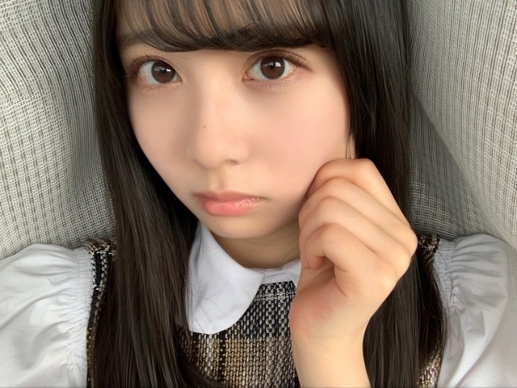
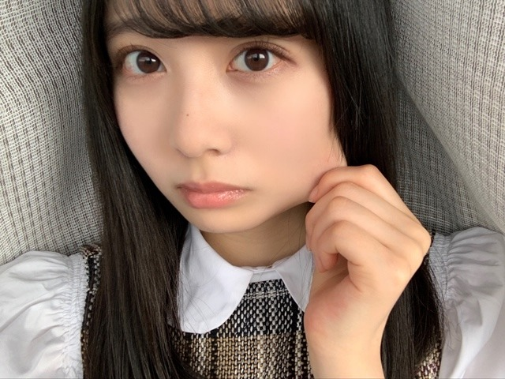
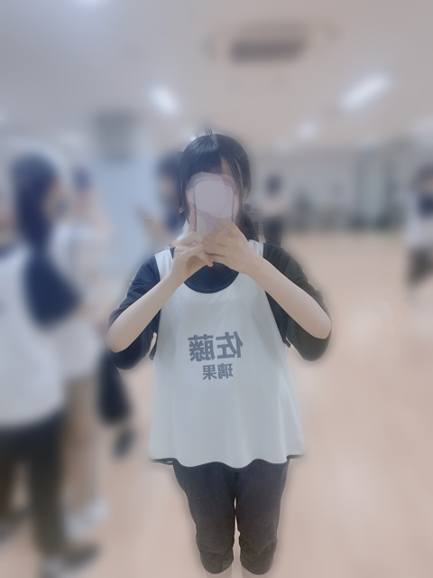
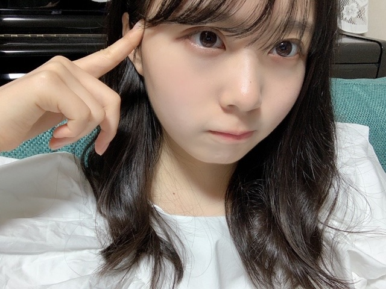

2020/0531Sun何があっても、ポトフは美味しい☺︎弓木奈於
ページをクリックしてくださりありがとうございます
乃木坂46 新4期生
京都府出身
弓木奈於（ゆみきなお）です( '-' )ง✧

ほっぺた押しすぎっ
今日のタイトルの秘密は、
携帯のメモを整理していたら
「何があっても、ポトフは美味しい」
とだけ書いてあるメモがありました。
この日はポトフを食べたのでしょうか？
全く記憶がございません( '-' )ง✧
メモりがちっ
---------- ｷﾘｶｴ ---------
昨日、一昨日と『欅共和国2017』を拝見しました。
2日ともちゃんと、びしょ濡れになるまで手を洗いましたよ〜|•'-'•)و✧
画面から伝わってくる迫力に何度も鳥肌が立ちました。
目の奥からも力強く放たれる想いに心が引き込まれ、そして心から楽しんでいらっしゃる笑顔に何度も口角を上がらせていただきました。
思わず涙が溢れる幸せな2日間でした。
先日の乃木坂46
「真夏の全国ツアー2017 FINAL! IN TOKYO DOME」
の特別配信も見ていました！！
この日も私は椅子に座ってワクワクしておりました。
いつどの瞬間を切り取っても全てが美しくて、揺れる髪の毛までも全てがお綺麗で
瞬きがもったいなく感じました。
そして先輩方のお言葉はいつも、心に響く大切なお言葉です。
先輩方が今まで1日1日を大切に努力していらっしゃっているからこそのお言葉だと思います。
感謝の気持ちを忘れずに、
私も素敵な花びらに成長できるように頑張りたいです。

ほっぺたに、まる作りがちっ
---------- ｷﾘｶｴ ---------
❁質問のお返事をさせていただくコーナー❁
⚫︎『魚)^o^(魚』これを見て最初に思ったことはなんですか？
魚持ち（うおもち）...？
⚫︎50m走のベストタイムは何秒ですか？
7秒とかだった気がします...！( •́⍛•̀)曖昧
⚫︎リモート授業が夏休み入るまで確定したんだけど集中して受けるにはどうしたらいい？
毎日お疲れ様です☺️
私は、授業中ずっと座って見つめてると眠たくなっちゃうので
ちょこちょこ、寄り目をしていました！
寄り目すると目が復活するので！！
でも私の場合対面授業だったので、
先生に「何か悩んでることあるの？」って心配していただいて申し訳ない気持ちになった記憶がございます...。
顔が見えないリモートだと大丈夫なのかなって思いました☺︎
あ！勉強している内容を声に出すのはいかがでしょう...⁉︎
少しでもお力添え出来たら嬉しいです(;_;)
⚫︎ 弓木ちゃんが好きなお味噌汁の具はなんですか？
お茄子です！
⚫︎今までファンレターってあんまり送ったことがありません。それでもゆみっきーには送りたいなと思ってるんですけど、送っても良いでしょうか...？？
お気持ちとっても嬉しいです( ›_‹ )♡
目をまんまるにして読みたいです！！！
⚫︎ラグビーのイメージはどうですか？
全員で一致団結して暑い中や寒い中練習なさっていたり、何があっても諦めずに立ち向かっていらっしゃる姿が素敵だなって思います☺️
私もそのような人間になりたいです！
⚫︎弓木ちゃんと会えた時のために何か話題作りが欲しいのですが、何かありますか？
なんだろう！！なんでもいっぱいお話ししたいなぁ(*ˊᵕˋ*)
最近ハマっていることとか、趣味のお話とかお聞きしたいです❁
⚫︎テニスやった事ありますか？
ないです！
見てるの好きです(๑ ˊ͈ ᐞ ˋ͈ )
⚫︎ 4人兄弟の長女なんですけど、自粛中とっても大変です(-.-;)y-~~~兄弟がたくさんの奈於ちゃんは、どんな風な兄弟ですか？こんな時って、どう乗り越えますか？
毎日本当にお疲れ様です( ;_; )！
私はお家でいつも以上に話せる機会が出来たので、浅い話から深い話まで本当に色々な話をしています！最近UNOにハマっています（笑）
基本的に個々でやるべき事一人一人やっている事が多いかなって思います！
喧嘩は、プチ喧嘩が多いので大体「やめや〜！」って言うとおさまるのですが、
私も未熟者で、どちらか不完全燃焼で終わってしまった時は
後で思った事を話したりします...！
あとは、母に話します！
母が一番広い目で皆の事を考えてくれていると思うので☺️
私もどうしたらいいのか手探りで、お力になれるようなお返事が出来なくてすみません(;_;)
ご兄弟の事を大切に想っていらっしゃる姿が素敵だなって思いました✨
⚫︎ゆみきちゃんは髪の毛をオーディションの時のように短くする予定はありますか？
毎年、夏に切って冬はのばしていました！
今年はどうするだろう...
オーディションの時も知ってくださってありがとうございます( *ˊᵕˋ ) ⁾⁾
⚫︎北野日奈子さんとのエピソードはありますか？？？
『乃木坂工事中』の収録をさせていただいた時に、井上小百合さんと北野日奈子さんと縄跳びの二重跳びバトルをさせていただき、北野日奈子さんが優勝なさいました！
北野日奈子さんの笑顔が素敵で見惚れてしまいました( ⸝⸝⸝•_•⸝⸝⸝ )
井上小百合さんは、以前乃木坂46TVでにゃんこスターさんとコラボしていらっしゃるお姿を見ていて開いた口が塞がりませんでした！
二重飛びまたいつかリベンジできるように練習しています
⚫︎高山一実さんと何か会話しましたか？
「8th YEAR BIRTHDAY LIVE」の本番前にすれ違わせていただいた時に「お疲れ様です。頑張ってください！」と大変恐縮ながらご挨拶させていただいたら
本番前の本当にお忙しい中にも関わらず
「あ！お疲れ様です〜☺️ありがとう✨」
と輝く笑顔で大きな声で言ってくださって
本当に本当に本当に。心の底から有り難く嬉しくて幸せでした！
⚫︎カラスを英語で言うと？
マズいです...見当もつきません( ૦هᐤ )!
curios...？
black bird...？
ﾀﾞｯｼｭ!≡≡≡ﾍ(*--)ﾉ 調
⚫︎喜怒哀楽を表した写真！をいつかのっけて欲しいです！
急に日が照って、眩しっってなった時
喜怒哀楽どれにも当てはまりませんね...！
喜怒哀楽頑張ります٩( *˙0˙*)۶
⚫︎なおちゃんの学生時代はどんな事が楽しいと思えましたか？？？
高校一年生の時、友達と自転車登下校をしていたのですが、登下校も楽しかったですし
渡り廊下や中庭でお弁当を食べたのも楽しかったです！
部活動でも、先輩方も同学年の方も優しい方ばかりだったので、毎日楽しく過ごさせていただきました(´ ˘ `∗)
周りの友達がものすごく面白くて、優しいので、楽しかったな〜って思える学生時代でした！（有難い...）
⚫︎ひとつつっこませて！ファ♭はミだよ...！！
( ˙◊︎˙◞︎)◞︎ ！！
...負けるな、しょげるな٩(•́ι_•̀ )وハヤシルナ
⚫︎スーパー戦隊で見たことある作品ある？
はい！一番記憶に残っているのは『轟轟戦隊ボウケンジャー』ですかね...？
家族で一話も逃さずに観ていました！
⚫︎ 夫婦で名古屋ドームのバスラの前に京都観光しました。また京都行きたいです。オススメの場所教えてくださると嬉しいです。
秋頃になると、紅葉のライトアップあるのですがとっても綺麗でした！
祖母が鈴虫寺はどうかな？って教えてくれました☺︎
温かいお言葉ありがとうございます( *ˊᵕˋ ) ⁾⁾ ❁
⚫︎コメントしてたら握手会行って、名前覚えててくれることとかありますか・・・？♡
覚えましたよ〜( ｰ̀֊ｰ́ )✧
コメントとっても嬉しいです☺️ありがとうございます✨
⚫︎MVで会ったことない卒業生と共演してみてどう感じましたか？
私はずっとTVや画面、雑誌などで拝見していて先輩方のような女性になりたいって思っていたので（いるので）
偉大な先輩方とご一緒出来たことが本当に有り難く幸せです。
⚫︎課題が終わりません！応援してください！
〝課題か...大事ですよね〟
ダジャレをあげます( ˙༥˙ )
応援になってないですよね！笑
毎日お疲れ様です☺️
課題頑張ってください✨
⚫︎最近よく連絡を取るメンバーとかいますか？
あ！昨日、林瑠奈ちゃんと松尾美佑ちゃんと、
欅坂46さん 新2期生の増本綺良ちゃん、幸阪茉里乃ちゃん、
日向坂46さん 新3期生の高橋未来虹ちゃん、森本茉莉ちゃん、山口陽世ちゃん
と人狼ゲームをしました！
一回戦、私と瑠奈ちゃんが人狼だったのですがバレバレだったらしいです...笑
未来虹ちゃんが「投票入れて欲しくない人いる？」って聞いてくれた時に、
皆「はい」「私白だから入れないで」「私パン屋だから入れないでね」って言っていて
私は
〝私も何か言わないと...！でも潔白じゃないから白って言えないな...あ、嘘つかないと〟って思って
とりあえず「えー」って言ったのです。
ゲームが終わった後、ぱる（山口陽世）が
「なおちゃん、白って言えばいいんだよ。えーとか言うけん笑」
とアドバイスをくれました。プロです。
皆可愛くて、ワードセンスが本当に面白くて、いつも笑わせてもらっています( ◌´ `◌ )幸
皆さんの出来事や、体調を気遣ってくださるお言葉などいつもコメントありがとうございます☺️
初めてコメントしてくださった方もありがとうございます✨
皆さんの温かいお言葉に私は日々ウルウルです( ˊ•̥ ̯ •̥`)
質問もたくさんしてくださってありがとうございます✨
まだお答えできていない質問も次回お返事させていただきたいです( *ˊᵕˋ ) ⁾⁾ ❁
---------- ｷﾘｶｴ ---------
今日は写真をたくさん撮ってみました！
私、皆と全然写真を撮っていないことに気づきまして...
自分の写真いっぱいだと申し訳ないなって思ってたのですが、
コメントで
〝写真いっぱいのせてください☺︎〟と言ってくださったり
少しでもお会い出来ているような気持ちになっていただけたらなって思って
撮ってみました( ›_‹ )
いろいろな表情ができるように頑張らないとですっ！！
明日は黒見ちゃん| Ꙭ)وﾞ ㌧㌧
綺麗な紫陽花がとってもお似合いで
花言葉にも心がジーンと温かくなりました☺️
美祐ちゃんのなおちゃん呼び、私全然気づかなかった（笑）
なんでも、呼んでもらえるだけで嬉しいので₍₍( ´ ᵕ ` *)⁾⁾
可愛いです。
最後まで読んでくださりありがとうございました！
皆さんも
お体に気をつけて、素敵な1週間になりますように...✨

本日もありがとうございました☺️
2020/0530Sat空がどこまでも青くて幸せです。松尾美佑
夕方に一瞬だけ雨が降る日がありました
小さい頃は正直雨が苦手でしたが
何かのテレビで雨が降らないと野菜が困る事を知ってからは、
雨の日は野菜達の喜びを想像しています。
夕立のあとの太陽がちょこっと微笑んでいる時間が本当に綺麗です。
「夕立も予測できない未来も嫌いじゃない」
です。
開いて下さりありがとうございます。
瑠奈ちゃん巻き髪ポンパドール了解です！
ありがとう☺︎
千葉県出身高校1年16歳の
松尾美佑(まつおみゆ)です。
【ちょっと髪巻きました】
よろしくお願い致します。
『世界には愛しかない』 (欅坂46さん)
研修生ツアーで披露させて頂きました。
私は曲中のポエトリーもさせて頂きました。
ポエトリーに気持ちを込める為に、
ダンサーさんが『世界には愛しかない』の中の "僕" の物語を教えて下さりました。
本当に感動しました。
私は全ての曲に物語があると思います。
大きなノートに歌詞を書くのが好きです。
好きな言葉や重要だと思う言葉は少し大きめに書いて、
曲のイメージに合わせて文字もちょっこっとずつ変えたりして、
凄く楽しいです。
曲の中に見える景色を想像して、
すると物語が見えてきます。
作詞をされた方が想われて書かれた物語と
私から見えた物語は違うかもしれませんが、
同じ曲でも人によって見える物語が違う事もとても素敵だと思うのです。
物語を沢山の人に伝えられるようなパフォーマンスが出来る人になりたいです。

【(ง ꙭ)ง】
まだ言っていなかった事があります。
でも瑠奈ちゃんが以前少し書いてくれていて、
コメントでも頂きました。
「きなこさんって、何ですか？」 と。
きなこさんは、
猫です^._.^

【じーーっ( Ꙭ)】
大人しくて、マイペースで、大人っぽい、
女の子です。
猫パンチをすると見せかけて、本当に叩くことは無いです。手を小さくひょいひょいします。
生まれてからの年数は私よりも1つ下です。
でも何だかお姉さんみたいで、
"きなこさん" と呼びます。
まるはいつもきなこに猛アタックしています
まる : 仲良くしよーよー！！！！！
きなこ : 元気ねぇ、小ちゃいの。
まる : ねーねー遊ぼーよー！！！！
きなこ : ふいっ。
として、終わります。
まるの片想いです。

【･-･】
沢山ヘアアレンジのコメントありがとうございます¨̮
ツインテール、ポニーテールと同じくらい多く頂きました。
久しぶりにしてみたら何が正しいのか分からなくて顔が真顔です。
左右編み込みが大好きなのでツインテールでも結び目の上までは編み込みました。
ゆる〜く細めに全体の髪を巻きました。
¨̮お返事コーナー¨̮
✽好きな教科は何ですか？
(私のみゆちゃんのイメージは体育と社会が好きそうです笑)
世界史と生物と中学までの数学です
文理選択に迷いに迷って文系です¨̮
体育も好きですよ！
✽好きなケーキの種類を教えて？
いちごのタルトとティラミス！！
いちごじゃなくても基本タルトが大好きです
ティラミスも大好きです
✽短距離、長距離どっち走るの得意ですか？
圧倒的短距離派です。
持久走が嫌で嫌で、中1の時の体力テストの
1000m走 7分半くらいかかりました。
でも聞いてください、中2は3分50秒でした
✽学校で思い出に残っている行事などはありますか？
中3の時の修学旅行です
初めて近畿地方に行きました。
✽今ハマってることは何？
可愛いケーキが出来上がるまでの動画を見る事です( Ꙭ)
密かに作ってみたいなと思っちゃったりしていたりします。
✽｢千葉県は島｣説、信じますか？
そんな説あるんですか？！初耳ですᐠ( ᐝ̱ )ᐟ
✽ 今、元気〜！？
元気〜〜〜〜！！！！！！
(何この可愛い質問)
昨日
「欅共和国2017」を見させて頂きました。
本当に鳥肌が立ちっぱなしでした。
メンバーの皆さんのかっこいい曲での表情や指先だけが写った時の綺麗さに感動しました。
眼力や後姿でも見て下さる方の心をドキッとさせられるパフォーマンスを出来る人になりたいです。
本日もとても楽しみです！
さぁ〜
明日はなお〜〜〜です。
なお〜って心で思っているのに先日普通に
"なおちゃん"って電話で言ってしまいました
あちゃちゃ〜
なお〜です。沢山練習します☺︎
なお〜
最後まで読んで下さりありがとうございます。
また5日後！

ツインテールがよく分からない！！
ミュウでした¨̮
2020/0529Friお疲れ様です。林瑠奈です。
本日もお疲れ様です。
乃木坂46新4期生の林瑠奈です。
神奈川県出身高校2年生16歳
華咲くシックスティーンの林瑠奈です。
負けるなしょげるな林瑠奈、今日も1日頑張るな
(ピンポーン)
「世界中の隣人よ」のMVが公開されました。
今はなかなか外に出ることができない世の中ですが、そんな世の中を支えてくださる全ての方に感謝したいです。
そして、ご卒業された方含め、乃木坂46全員での素敵な楽曲に参加させていただけたこと、本当にありがとうございます。
沢山の方に届いて欲しいです。
わたしも沢山聞きまくります！！
前を向いて生きましょう。
...........................................................................

2020/0528Thu白いゼッケン。佐藤璃果
こんにちは～︎︎︎︎︎☺︎
今日は５月28日木曜日。
ブログを開いて下さり、
ありがとうございます。
暑い日が続いておりますが、
いかがお過ごしでしょうか？
お元気ですか？
私はまだ夏本番ではないというのに、
水の消費量がさらに増え、
自分の夏場の水の消費量に震えております。
にこにこくろみんからバトンを頂きました。
乃木坂46 新4期生 岩手県出身
佐藤 璃果(さとう りか)です。

(全力でやったらもっとほっぺた伸びますが、控えめに佐藤。)

(さっきより伸びた。実はまだ伸びるよ。)
前回のブログでの皆さんへの質問。
沢山のオススメの曲、コメント
ありがとうございます☺︎
乃木坂46時間TVについてのおはなし、
皆さんの事、MVについての事、
沢山、ありがとうございます❤︎
そして、
色んな曲と出会わせて頂きました！⸜( ॑꒳ ॑ )⸝
今まだ400コメントすぎあたりの曲を
追加してる途中なんですが、
なんと『みんなのオススメ』プレイリスト
には342曲もの曲が追加されています。
追加するのは大変ですが、
皆さんの事をより知れる気がするので
頑張っております~
(これから書きたい！と思った方は前のブログに出来れば少なめでお願いします(小声))
特に秀でているものや特技がないから
皆さんとの共通の話題が増えたら嬉しいな~って思ってます。

(5月28日。私、風景画は書けるみたいです！動物や人は。。。)
最近の私出来事。~~~~~~~~~~~~~~~~~~
友人と深夜に電話を久しぶりに
することになりまして...。
寂しくて寂しくて、久しぶりで、
なんだか嬉しくて30秒ぐらいずっと
笑っていました。
えへへえへへえへへって
やばいですよね。
嬉しさが溢れてえへへという
言葉に変わり、止まらなくなりました。
*****************************************
｢世界中の隣人よ｣
MVが5月25日に公開されました。
心に染みてとても温かくて、ほっとする
こんなにも素敵な楽曲に、
ありがたいことに私も参加させて
頂きました。
世の中のみんな、誰かが誰かの隣人で、
誰かが誰かの大事な人である事を
忘れず、優しい気持ちで生きて
行けたらいいなと思います。
誰かのために、世界のために
働いてくださっている方への感謝を
より一層強く持ちたいです。
いつもありがとうございます。
神宮球場が徐々に映されていって、
紫のサイリウムでいっぱい
になるシーンが特に、胸が熱くなりました。
沢山聞きたいと思います。
*****************************************
今日は研修生の時のお話を
させて頂きたいと思います。
私の中でとても大事な記憶です。
研修生時代のことを知らなかった人も
研修生ツアーに来て下さった方も、
知っていただけたら、と思います。
*****************************************
昨年の夏頃、振り入れが始まりました。
でも、最初の方、私はテストがあり、
参加できませんでした。
テスト期間だったのに、
みんなより遅れてしまっていることが
不安で、テスト勉強に集中できない
日々を送っていました。
(テスト期間なのに、皆のダンス練習動画
を見てしまっていた... やーいばかばか)
最初の方に居なかったことで
私以外の14人の中での絆が
深まっていそうで、
人間関係を築くことが苦手な私は、
毎日不安だった事をよく覚えています。
そんな中、
｢待ってる！｣や｢小さなことでも聞いてね｣
など温かい言葉を送ってくれる子もいて、
その度に心がじーんとしていました。
いち早く歌割りの紙を
送ってくれる子もいました( .. )
そのお陰で、新幹線で歌割りを見ながら
東京へ向かうことが出来ました。
みんなレッスンで疲れていたり、
いっぱいいっぱいだったりするのに...。
温かいですよね本当に...感謝です。
そんなこんなでテストが終わり、
私も夏のレッスンに参加しました。
個別で何度も丁寧に、
焦らなくても大丈夫だよ、
と、教えてくださったダンサーの皆様
にも感謝の気持ちでいっぱいです。
マネージャーさんにも沢山の
温かい言葉を貰いました。
ありがとうございました。
毎日みんな必死でした。
思い出すだけで、あの時の
夏の匂いが蘇ってきます。
毎日レッスンさせて頂けるのは
乃木坂46さん欅坂46さん日向坂46さん、
沢山の先輩方の今までの努力が
あったからこそで、恵まれた環境でした。
ありがとうございました。
これからも沢山の方への感謝の気持ちを
忘れずに行きたいです( ੭ ˙˙ )੭
そして、
ビブスという物が貰えた時、
初めて坂道研修生という存在がそこに
あるということを実感出来ました。
紙やガムテープに名前を
書いていたことも懐かしいです。
明日から自分の名を書かなくてもいいんだ~
と嬉しい気持ちもありましたが、
少々寂しかったです。。
最後の自分で書いた名前を、
交換しあっている子もいて
微笑ましかったです。
そして、｢白｣。白です。
ビブスの色が白だったんです。
そこにも感動していました。
これから何色になるか分からない。
未知の可能性を秘めている気がして、
嬉しかったです。
白という色も素敵だなと思えた日でした。

(佐藤璃果 )
えええええええええ
レッスンの事だけでこんなに
長くなってしまった...。
ツアーの事は、また書きます。
*****************************************
長いから少しだけ
~~~質問~~~
〇好きなバンドはPEDROさん、
back numberさん、sumikaさん、Official髭男dismさんと言っていましたが、その4組の好きな曲はなんですか？教えてほしいです！
みんなが好きな曲教えてくれたので、
私も！
前のブログにも書いたんですが...！
重複ですみません。
❁PEDROさん
｢感傷謳歌｣ ｢GALILEO｣｢自律神経出張中｣
｢うた｣ ｢甘くないトーキョー｣
❁backnumberさん
｢ヒロイン｣と、｢クリスマスソング｣、｢花束｣
❁sumikaさん
｢Amber｣、｢ホワイトマーチ｣ 、
｢フィクション｣、｢センス・オブ・ワンダー｣
｢ファンファーレ｣
❁Official髭男dismさん
｢パラボラ｣、｢115万キロのフィルム｣、
｢異端なスター｣、｢I LOVE...｣
バンド以外のアーティストさんや
アイドルの方の曲もよく聴きます。
よく質問を頂く、
乃木坂46さんの中での好きな曲を
いつも書こうとするんですが、多すぎて...。
よし！次までにまとめよう。
7曲ぐらいに絞れたらいいな。
次は質問たくさん答えますね( ´﹀` )
少なくてごめんなさい~。
*****************************************
明日はるなぴです。
"美味しかったよ、ありがとう☺︎☺︎"
と直筆メッセージが回ってきました。
みんな食べ物が大好きなのですね！！
私も1つ☺︎を付け足し、
最近暑いので、小型扇風機も
バトンにしたいと思います。
るなぴに個人的メッセージで
お勉強お疲れ様！も付けます！
*****************************************
私もレポート頑張らねば~~。
皆さんもお勉強、お仕事、人生、
お疲れ様です。
皆さん、沢山頑張っているようですね（ ; ; ）
大変よく頑張っていますで賞。
皆さんにとって今日が
素敵な一日になりますように。

(巻いたけどすぐ巻き取れちゃう人です~
前髪がいつもと違う感じ(੭ ᐕ)) ？)
またね。
#7 ✩* り か ✩*
2020/0527Wed世界中の隣人よ ☺︎ 黒見明香
ココを見つけてくださり ありがとうございます♪
乃木坂46 新４期生の黒見明香です。
すこーしだけ自己紹介させてくださいませ☺︎
♪:*:･･:*:･･:*:･･:*:･･:*:･･:*:･♪:*:･･:*:･･:*:･･:*:･･:*:･･:*:･♪
黒見 明香（くろみ はるか）
2004年1月19日生まれ 16才
香港生まれ・東京都出身です
あだ名： くろみん・黒見ちゃん
3の倍数9・6・3(くろみ)
と覚えてもらえたら嬉しいです♪
୨୧「世界中の隣人よ」のミュージックビデオ♬ ご覧になりましたかー？

ベランダで育てていた あじさい(紫陽花) が満開になったので
青いあじさいの花言葉は
毎日疲れている方にも「世界中の隣人よ」が届きますように、

10年前 幼稚園のときの写真です☺︎
【 チアダンス 】
なぜか 園庭の『 犬小屋 』に籠もっていたそうです Σ（ﾟдﾟlll）
＊
⚫︎黒見ちゃんは今後ショートカットにする予定はありますか？